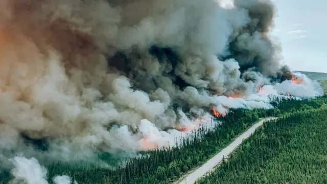

Event 3
Fire in the forests of Quebec
A comprehensive study of a large-scale forest fire in the province of
Quebec, Canada. The analysis includes determining the area of burned
areas, monitoring the spread of fire, heat mapping of active fire
centers, and assessing the long-term consequences for forest
ecosystems.